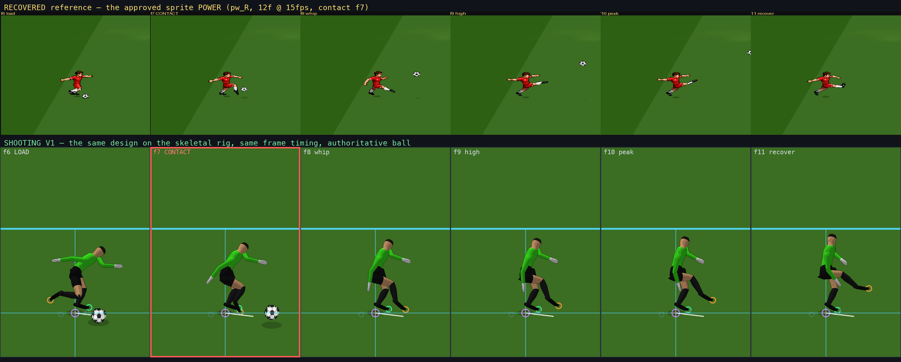
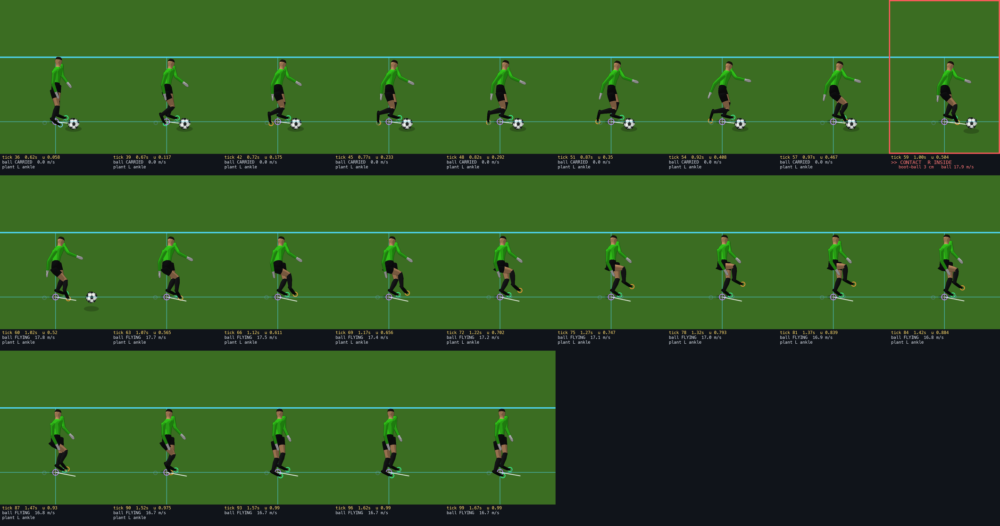
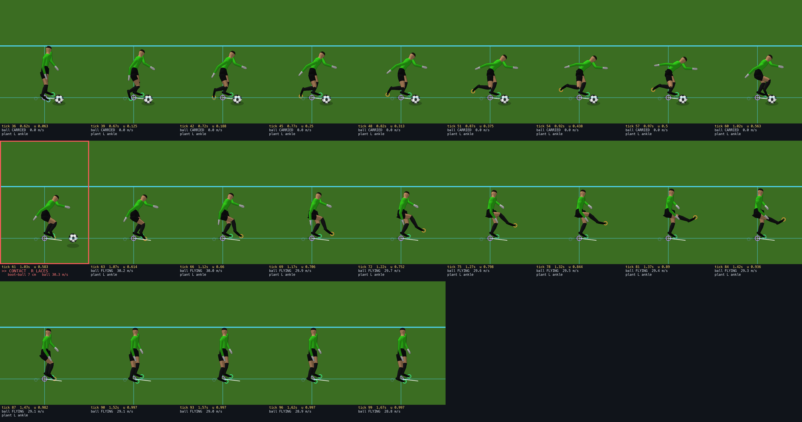
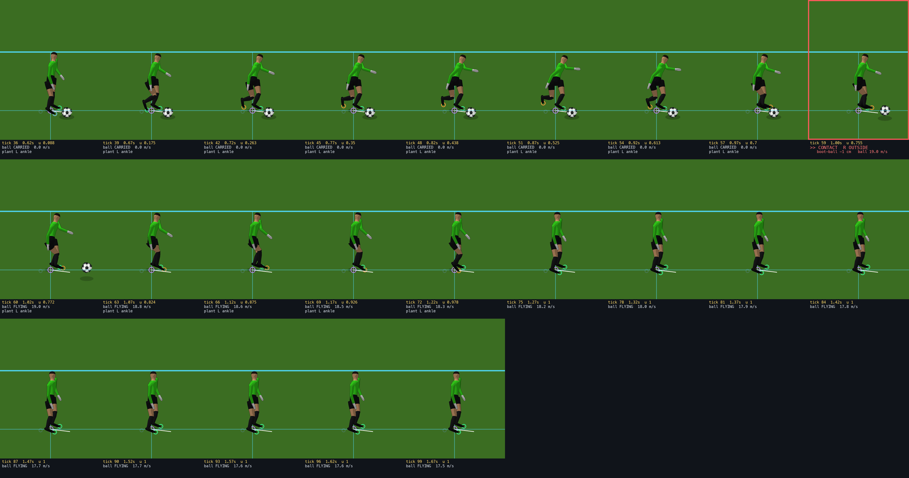
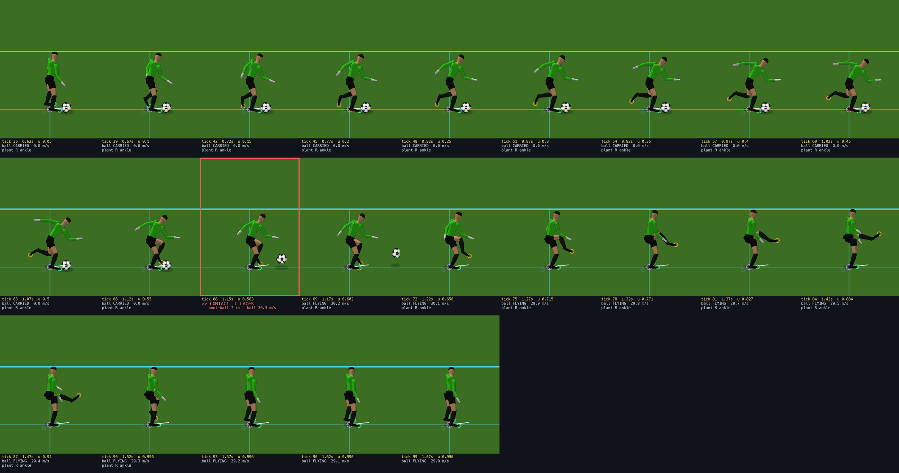
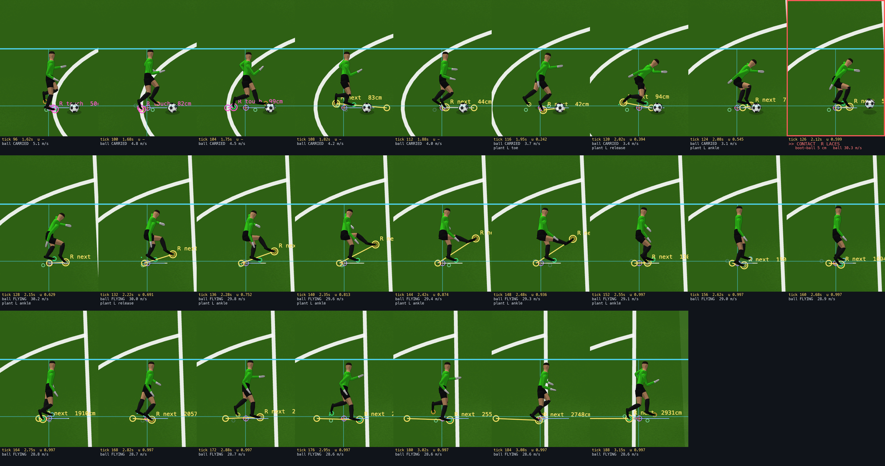
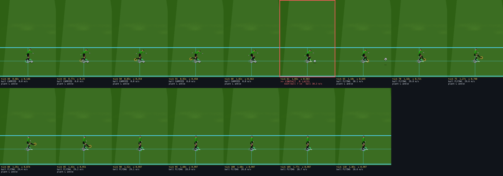

Five strike families on the skeletal rig, driven by the shooting model that was already in the simulation.
ptKick, the technique table, the launch
families, foot selection, the charge curves, and the sprite library whose frame counts define the authoritative contact instant. None of that
was redesigned. The five requested shots map onto existing techniques with no new simulation concepts, and each authored action carries the
rhythm of its recovered sprite entry. Animation ON and OFF produce bit-identical shots on every family, both feet, standing and on the run.BallJ ball at your feet · L loose ball 4 m ahead · K dribble markers
Shoothold to charge, release to strike — 1 inside/curl · 2 normal · 3 power · 4 chip · 5 trivela
FootF toggles the preferred foot; the strike follows it
MoveWASD or arrows · Q walk · E jog · Shift sprint
Body6 cycles the six proportions · ViewX Mixed · G follow · V markers · H HUD · N runners
PlaytestR reset · M pause · , slow motion · . step
| Shot | Technique | Launch family | Nominal D | Recovered rhythm | Striking surface |
|---|---|---|---|---|---|
| 1 inside / curl | INSIDE | SHORT | 14 m | 12 frames @ 14 fps, contact 6 | medial face |
| 2 normal | LACES | DRIVEN | 20 m | 10 @ 12, contact 7 | instep |
| 3 power | LACES_POWER | CLEAR | 35 m | 12 @ 15, contact 7 | instep |
| 4 chip | CHIP | LOFT | 22 m | 8 @ 14, contact 5 | under-toe |
| 5 trivela | OUTSIDE | SHORT | 14 m | 8 @ 14, contact 6 | lateral face |
The contact fraction of each authored action IS its recovered frame timing. That is what keeps the established feel through the move to the rig, and it means the authoritative contact instant did not move.

Measured on the rig, the striking toe travels 0.58 m behind and 0.37 m up at load, meets the ball at 0.49 m forward, then rises 0.32 to 0.67 to 0.98 m while travelling forward to 0.95 m. That is the old strip's shape, not a new one.
At the authoritative contact tick, for every family and both feet.
| Case | Boot to ball surface cm | Reach applied cm | Plant foot | Plant slide cm | Penetration cm | Timing warp in/out | Launch m/s |
|---|---|---|---|---|---|---|---|
| INSIDE/CURL R | 3.0 | 27.6 | ankle | 0.00 | 0.0 | 1/1.28 | 17.1 |
| INSIDE/CURL L | 3.0 | 27.6 | ankle | 0.00 | 0.0 | 1/1.28 | 17.1 |
| NORMAL R | 5.8 | 20.3 | ankle | 0.00 | 0.0 | 1/1.48 | 26.0 |
| NORMAL L | 5.8 | 20.3 | ankle | 0.00 | 0.0 | 1/1.48 | 26.0 |
| POWER R | 7.3 | 21.3 | ankle | 0.00 | 0.0 | 1/1.36 | 29.3 |
| POWER L | 7.3 | 20.9 | ankle | 0.00 | 0.0 | 1.25/1.11 | 29.3 |
| CHIP R | 3.9 | 12.8 | ankle | 0.07 | 0.0 | 1/1.56 | 12.7 |
| CHIP L | 3.5 | 12.5 | ankle | 0.00 | 0.0 | 1.2/1.7 clamped | 12.7 |
| TRIVELA R | -1.3 | 22.3 | ankle | 0.00 | 0.0 | 1/1.7 clamped | 18.1 |
| TRIVELA L | -1.2 | 23.2 | ankle | 0.00 | 0.0 | 1/1.7 clamped | 18.1 |
| Case | Boot to ball cm | Reach cm | Plant | Slide cm | Pen cm | Warp | Launch |
|---|---|---|---|---|---|---|---|
| Short Lean — POWER | 6.0 | 18.0 | ankle | 0.00 | 0.0 | 1/1.36 | 29.3 |
| Short Lean — INSIDE/CURL | 2.5 | 23.8 | ankle | 0.00 | 0.0 | 1/1.28 | 17.1 |
| Tall Lean — POWER | 8.3 | 22.8 | ankle | 0.00 | 0.0 | 1/1.36 | 29.3 |
| Tall Lean — INSIDE/CURL | 3.3 | 28.7 | ankle | 0.00 | 0.0 | 1/1.28 | 17.1 |
| Short Compact — POWER | 5.4 | 19.9 | ankle | 0.00 | 0.0 | 1/1.36 | 29.3 |
| Short Compact — INSIDE/CURL | 1.8 | 25.4 | ankle | 0.00 | 0.0 | 1/1.28 | 17.1 |
| Case | Boot to ball cm | Reach cm | Plant | Slide cm | Pen cm | Warp | Launch |
|---|---|---|---|---|---|---|---|
| walk approach — POWER | 2.5 | 16.2 | ankle | 0.00 | 0.0 | 1/1.36 | 29.3 |
| walk approach — NORMAL | 1.1 | 21.8 | ankle | 0.00 | 0.0 | 1/1.48 | 26.0 |
| jog approach — POWER | 5.2 | 16.3 | ankle | 0.00 | 0.0 | 0.55/1.36 clamped | 29.3 |
| jog approach — NORMAL | 1.5 | 19.9 | ankle | 0.00 | 0.0 | 0.55/1.48 clamped | 26.0 |
| run approach — POWER | 5.1 | 18.6 | ankle | 0.00 | 0.0 | 0.55/1.36 clamped | 29.3 |
| run approach — NORMAL | 1.8 | 20.4 | ankle | 0.00 | 0.0 | 0.55/1.48 clamped | 26.0 |
Across all 22 measured strikes: boot-to-ball-surface median 3.5 cm, p95 7.3 cm, max 8.3 cm. Plant-foot slide max 0.07 cm; no penetration anywhere. A starred reach hit its bound and saturated rather than stretching the leg; a clamped warp means the schedule was outside 0.55-1.70 of the action's natural length and was reported rather than distorted further — it happens on a first-time strike from a run, where the simulation's own first-time branch leaves only 0.2 s of approach.






of_shot_regress.js: five families x both feet x standing and running, comparing the authoritative
trace including the kick record itself (contact tick, launch speed, launch vz, technique, foot, charge). All 20 combinations
max |delta| = 0.| Case | ms per rig per frame |
|---|---|
| Locomotion only | 0.114 |
| Locomotion with a shot live | 0.150 |
| Incremental cost of a shot | 0.036 |
| of which the kick pose itself | 0.034 |
The 60 fps budget is 16.7 ms. The extra cost is one family blend, one mirror, one plant grounding and one bounded IK solve on the striking leg, and only while a shot is live.